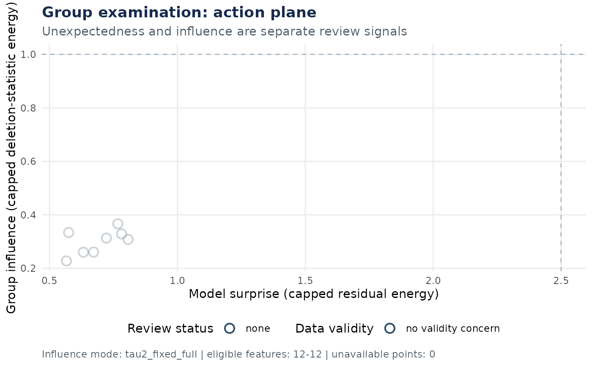

examine_group() branches from subject-level data at a group reducer. It
reports model-conditioned predictive surprise separately from each
subject's exact influence on requested group estimands. It never deletes a
subject or rewrites the source analysis.
Usage
examine_group(
x,
method = NULL,
formula = NULL,
options = list(),
quality = NULL,
estimands = NULL,
retain = NULL,
control = examination_control(),
na_action = c("fail", "exclude")
)Arguments
- x
A subject-level
gds_plan,gds_source, orgds, optionally containing one group reducer and a post-hoc conclusion tail.- method
Reducer method when
xhas no reducer.- formula
Model formula when
xhas no reducer.- options
Reducer options when
xhas no reducer.- quality
Optional character vector naming first-level quality columns in
col_data(x). Metrics are descriptive unless an explicit direction and absolute threshold are declared incontrol$review$quality.- estimands
Named linear estimands or design-column names. See
examination_control()for execution controls.- retain
Optional subject IDs retained for later localization regardless of review rank.
- control
A validated object from
examination_control().- na_action
Missing-covariate policy. The default fails;
"exclude"deterministically records and excludes affected subjects from this examination only.
Details
When x already contains one reducer, the examination inherits that
reducer's method, formula, options, and weighting semantics. Supplying model
overrides in that case is an error. When no reducer is present, method is
required and formula-driven reducers default to ~ 1.
Result contract
The returned object keeps spatial maps in ordinary GDS objects and keeps
subject, contrast, estimand, availability, sensitivity, and provenance data
in tables or named lists. subject_data$review_priority orders inspection;
subject_data$review_status changes to "review" only when an absolute,
stability-aware criterion is met. Random-effects screening is labeled
"tau2_fixed_full"; exact retained-subject refits are labeled
"tau2_refit_exact" and never alter the original review queue.
Examples
subject_ids <- paste0("sub-", 1:8)
participant_data <- data.frame(
group = factor(rep(c("control", "patient"), each = 4)),
row.names = subject_ids
)
beta <- array(rnorm(12 * 8, sd = 0.2), c(12, 8, 1))
beta[, participant_data$group == "patient", 1] <-
beta[, participant_data$group == "patient", 1] + 0.4
variance <- array(0.1, dim(beta))
subject_gds <- new_gds(
assays = list(beta = beta, var = variance),
space = space_sample_labels(paste0("feature-", 1:12)),
subjects = subject_ids,
contrasts = "task",
col_data = participant_data
)
analysis <- as_plan(subject_gds) |>
reduce(method = "meta:re_reg", formula = ~ group)
exam <- examine_group(
analysis,
estimands = "grouppatient",
control = examination_control(retain_n = 2L)
)
summary(exam)
#> Group examination
#> model: meta:re_reg
#> formula: ~group
#> subjects: 8 included, 0 excluded for covariates
#> variance mode: measured_first_level
#> review cases: 0
if (requireNamespace("ggplot2", quietly = TRUE)) plot(exam)
